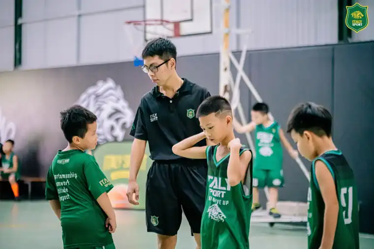

Cách ITALY SPORT đánh giá năng lực (tham khảo khung Jr. NBA)
4 cấp năng lực, 14 tiêu chí HLV chấm, 7 bài test đo bằng số và điều kiện lên cấp.
Lộ trình chuyển cấp
Hai thứ khác nhau: cấp độ nói con giỏi đến đâu, chương trình là lớp con đang học. Bé mới vào làm buổi đánh giá đầu vào để xếp cấp.
- 1Rookiethường 5-8 tuổi
- 2Starterthường 8-11 tuổi
- 3All-Starthường 11-14 tuổi
- 4MVPthường 14-18 tuổi
- 1Cơ bảnLàm quen bóng, dẫn bóng, chuyền, ném rổ qua trò chơi vận động. Dành cho bé mới bắt đầu.
- 2Nâng caoKết hợp kỹ thuật, học chiến thuật, thi đấu tập để con quen nhịp trận đấu.
- 3Đội tuyểnĐội tuyển U10, U12, U14, U16, xét chọn theo năng lực, đại diện trung tâm thi đấu.
- 4Elite CoachChương trình riêng cho các con có năng khiếu và muốn đi xa hơn với bóng rổ.
Con cần đạt gì để lên cấp?
- Kỹ năng: trung bình 7 tiêu chí kỹ năng từ 3,5 trở lên và không tiêu chí kỹ năng nào dưới 3.
- Thể lực: trung bình 3 tiêu chí thể lực từ 3,0 trở lên.
- Thái độ và giá trị: không tiêu chí nào dưới 3 (bé giỏi kỹ thuật nhưng thái độ chưa đạt thì chưa lên cấp).
- Bài test: đạt mốc của cấp đang học ở ít nhất 5 trên 7 bài (Rookie: 4 trên 6 bài), trong đó bắt buộc đạt bài dẫn bóng zic-zắc (T3) và bài ném theo cự ly (T4).
- Ổn định: đạt các điều trên ở 2 đợt chấm liên tiếp, cách nhau ít nhất 4 tuần.
- Thời gian tối thiểu ở cấp: Rookie 3 tháng, Starter 6 tháng, All-Star 9 tháng.
- HLV phụ trách đề xuất, HLV trưởng duyệt và ghi ngày lên cấp vào sổ điểm. MVP là cấp cao nhất; bé đạt chuẩn MVP được xét vào đội tuyển hoặc lớp nâng cao.
Mốc tuổi chỉ là mức thường gặp. Khung 4 cấp tham khảo khung huấn luyện công khai Jr. NBA, ITALY SPORT không phải đối tác hay chương trình chính thức của NBA. Xem chi tiết tiêu chí
4 cấp năng lực
Bé lên cấp khi làm chủ kỹ năng của cấp đang học, không tự lên theo tuổi. Tuổi ghi dưới mỗi cấp chỉ là mức thường gặp.
- 1Rookiethường 5-8 tuổi
- 2Starterthường 8-11 tuổi
- 3All-Starthường 11-14 tuổi
- 4MVPthường 14-18 tuổi
Rookie
thường 5-8 tuổi - lứa U7, U9
Yêu bóng rổ, vận động nhiều, làm quen bóng và các động tác nền tảng qua trò chơi.
Trọng tâm: Vui là chính: học qua trò chơi, sân nhỏ, mỗi bé được chạm bóng thật nhiều.
Starter
thường 8-11 tuổi - lứa U9, U11, U13 mới học
Làm chắc kỹ năng cơ bản bằng cả 2 tay, nắm đủ luật, hiểu mình là một phần của đội.
Trọng tâm: Kỹ thuật đúng và đều, bắt đầu chơi 2v2, 3v3 có phối hợp.
All-Star
thường 11-14 tuổi - lứa U11 giỏi, U13, U15
Kỹ năng dùng được khi bị kèm, tăng tốc độ và sức mạnh, phản ứng đúng với tình huống trận.
Trọng tâm: Kỹ năng dưới áp lực, phối hợp đồng đội, thi đấu có phương án.
MVP
thường 14-18 tuổi - lứa U15 đội tuyển, U17, Ngoại hạng
Thi đấu thường xuyên, chuyên môn hoá vai trò và vị trí, thực hiện chiến thuật đội.
Trọng tâm: Áp dụng kỹ năng trong trận thật, vai trò theo vị trí, đọc trận và dẫn dắt đồng đội.
14 tiêu chí, 3 nhóm
HLV chấm mỗi tiêu chí theo thang 1-5, so với chuẩn của cấp bé đang học. Điểm năng lực (0-100) = (trung bình Kỹ năng x 0,6 + trung bình Thể lực x 0,2 + trung bình Thái độ x 0,2) x 20.
Kỹ năng
Trọng số 60%
- Dẫn bóng
- Chuyền và bắt bóng
- Ném rổ và lên rổ
- Di chuyển chân
- Phòng thủ
- Bắt bóng bật bảng
- Hiểu luật và đọc trận
Thể lực
Trọng số 20%
- Tốc độ, nhanh nhẹn
- Bật nhảy, khéo léo
- Sức bền
Thái độ và giá trị
Trọng số 20%
- Tinh thần đồng đội
- Tôn trọng và fair-play
- Chăm chỉ, tiếp thu
- Kỷ luật, trách nhiệm
Thang 1-5
- 1 - Chưa làm được: Chưa làm được động tác kể cả khi HLV làm mẫu; làm đúng dưới 3 trên 10 lần.
- 2 - Đang tập: Làm được khi đứng yên hoặc đi chậm, không có người kèm; đúng khoảng 4-6 trên 10 lần.
- 3 - Đạt chuẩn cấp: Làm đúng và đều trong bài tập, khoảng 7 trên 10 lần, đúng như mô tả mức 3 của cấp.
- 4 - Vững: Làm đúng cả khi có người kèm, bị ép thời gian hoặc trong đấu tập.
- 5 - Vượt chuẩn: Chủ động dùng đúng lúc trong trận thật hoặc giải; đã chạm mô tả mức 3 của cấp trên.
Tiêu chí cấp Rookie
Kỹ năng
- Dẫn bóng: Dẫn tại chỗ tay thuận 20 nhịp không mất bóng; vừa đi vừa dẫn hết nửa sân
- Chuyền và bắt bóng: Chuyền ngực tới bạn cách 3m, bắt bóng bằng 2 tay mở rộng, đúng 7 trên 10 lần
- Ném rổ và lên rổ: Đứng đúng tư thế (chân rộng bằng vai, khuỷu tay dưới bóng), ném gần rổ chạm vành phần lớn số lần
- Di chuyển chân: Dừng 2 chân cùng lúc khi nghe còi; xoay trụ một chân mà không nhấc chân trụ
- Phòng thủ: Hạ thấp người đúng tư thế phòng thủ, trượt ngang 3-4 bước không bắt chéo chân
- Bắt bóng bật bảng: Bật nhảy bắt bóng 2 tay, tiếp đất 2 chân, giữ bóng chắc trước ngực
- Hiểu luật và đọc trận: Biết luật chạy bước, dẫn bóng 2 lần, bóng ra ngoài, cách tính điểm; biết vạch sân chính
Thể lực
- Tốc độ, nhanh nhẹn: Chạy và đổi hướng theo hiệu lệnh trong trò chơi đuổi bắt không bị ngã
- Bật nhảy, khéo léo: Bật 2 chân tiếp đất nhẹ; nhảy lò cò mỗi chân 5 lần
- Sức bền: Tham gia đủ phần khởi động và trò chơi, chỉ nghỉ theo hiệu lệnh
Thái độ và giá trị
- Tinh thần đồng đội: Chơi cùng bạn, cổ vũ bạn, nói được 1 lời khen bạn cuối buổi
- Tôn trọng và fair-play: Chào HLV và bạn, chấp nhận thua trong trò chơi
- Chăm chỉ, tiếp thu: Nghe và làm theo hướng dẫn ngay sau 1-2 lần
- Kỷ luật, trách nhiệm: Đúng giờ, mang đủ đồ, cất bóng sau buổi
Mô tả trên là mức 3 - đạt chuẩn cấp.
Tiêu chí cấp Starter
Kỹ năng
- Dẫn bóng: Dẫn cả 2 tay khi chạy, đổi tay trước mặt qua cọc không chạm cọc
- Chuyền và bắt bóng: Chuyền ngực, chuyền đập đất, chuyền qua đầu chính xác ở 4-5m; dừng 2 chân khi bắt
- Ném rổ và lên rổ: Ném 1 tay đúng kỹ thuật ở cự ly 3m; lên rổ tay thuận đúng nhịp 2 bước
- Di chuyển chân: Dừng 1-2 nhịp, xoay trụ thoát người kèm, bước nhử từ tư thế sẵn sàng
- Phòng thủ: Trượt ngang giữ người dẫn bóng, tay chủ động, luôn đứng giữa người và rổ
- Bắt bóng bật bảng: Chắn người trước khi nhảy, bắt bóng 2 tay ở điểm cao nhất
- Hiểu luật và đọc trận: Nắm đủ luật trận (lỗi cá nhân, 3 giây, bóng về sân nhà), biết vị trí của mình khi đấu 3v3
Thể lực
- Tốc độ, nhanh nhẹn: Đạt mốc chạy 20m của cấp, đổi hướng nhanh trong bài tiếp sức
- Bật nhảy, khéo léo: Bật 2 chân và 1 chân, tiếp đất có kiểm soát; bước chân khớp nhịp dẫn bóng
- Sức bền: Tập hết buổi, giữ được cường độ trong phần đấu tập
Thái độ và giá trị
- Tinh thần đồng đội: Chuyền cho bạn đứng trống, cổ vũ bạn, hiểu mình là một phần của đội
- Tôn trọng và fair-play: Bắt tay đối thủ, chấp nhận quyết định trọng tài
- Chăm chỉ, tiếp thu: Tập hết sức cả bài khó, sửa lỗi sau 1-2 lần nhắc
- Kỷ luật, trách nhiệm: Đi học đều từ 80% số buổi, nghỉ có báo
Mô tả trên là mức 3 - đạt chuẩn cấp.
Tiêu chí cấp All-Star
Kỹ năng
- Dẫn bóng: Giữ bóng khi bị kèm chủ động; đổi tay trước mặt, qua chân, sau lưng, xoay người
- Chuyền và bắt bóng: Chuyền vượt tuyến, chuyền 1 tay, chuyền khi đang di chuyển; bắt chắc khi bị kèm
- Ném rổ và lên rổ: Ném tầm trung sau dẫn bóng và sau bắt bóng; lên rổ cả 2 tay; ném phạt đúng quy trình
- Di chuyển chân: Thành thạo bước chân tấn công (bước nhử, bước chéo, dừng 1-2) và phòng thủ (lùi, đổi hướng)
- Phòng thủ: Áp sát đúng cách, hỗ trợ đồng đội, đổi người cơ bản
- Bắt bóng bật bảng: Chắn người và giành bóng cả ở rổ tấn công lẫn rổ phòng thủ trong đấu tập
- Hiểu luật và đọc trận: Thực hiện được phương án tấn công, phòng thủ đơn giản; hiểu đồng hồ 24 giây và tình huống cuối trận
Thể lực
- Tốc độ, nhanh nhẹn: Đạt mốc chạy 20m của cấp, chuyển nhanh giữa tấn công và phòng thủ
- Bật nhảy, khéo léo: Đạt mốc bật cao của cấp, tiếp đất 2 chân an toàn, giữ thăng bằng khi va chạm
- Sức bền: Giữ cường độ đủ 4 hiệp đấu tập, hồi sức nhanh giữa các lượt
Thái độ và giá trị
- Tinh thần đồng đội: Chơi vì đội, nhận vai trò HLV giao, nói chuyện trên sân
- Tôn trọng và fair-play: Tôn trọng đối thủ, trọng tài, khán giả; giữ bình tĩnh khi bị phạm lỗi
- Chăm chỉ, tiếp thu: Tự đặt mục tiêu cho mỗi đợt chấm cùng HLV và bám theo
- Kỷ luật, trách nhiệm: Đi học đều từ 85% số buổi, giữ nội quy đội, tự khởi động, ăn ngủ điều độ
Mô tả trên là mức 3 - đạt chuẩn cấp.
Tiêu chí cấp MVP
Kỹ năng
- Dẫn bóng: Dẫn bóng 2 tay thành thạo khi bị áp sát toàn sân, tổ chức tấn công hoặc thoát áp sát
- Chuyền và bắt bóng: Chuyền đúng thời điểm trong phương án đội (sau tình huống chắn người, chuyền vào trong)
- Ném rổ và lên rổ: Có cú ném tin cậy ở vị trí của mình (tầm trung hoặc 3 điểm, dứt điểm gần rổ khi va chạm)
- Di chuyển chân: Bước chân theo vị trí: hậu vệ dứt điểm cùng tay cùng chân, trung phong xoay trụ trong cấm địa
- Phòng thủ: Phòng thủ cá nhân và đồng đội đúng hệ thống, hỗ trợ rồi về lại người; chặn 1v1 nhiều lần liên tiếp
- Bắt bóng bật bảng: Giành vị trí và bóng trong tranh chấp 4v4
- Hiểu luật và đọc trận: Thực hiện chiến thuật đội và vai trò vị trí; đọc tình huống chắn người, hỗ trợ người hỗ trợ
Thể lực
- Tốc độ, nhanh nhẹn: Đạt mốc chạy 20m của cấp, chuyển trạng thái tốc độ cao
- Bật nhảy, khéo léo: Đạt mốc bật cao của cấp, đủ sức va chạm, giữ thăng bằng khi tiếp đất
- Sức bền: Chơi cường độ cao cả trận, tự khởi động và hồi phục đúng cách
Thái độ và giá trị
- Tinh thần đồng đội: Nhận và làm tốt vai trò, đặt đội lên trên thành tích cá nhân
- Tôn trọng và fair-play: Kiểm soát cảm xúc, tôn trọng mọi người trong và ngoài sân
- Chăm chỉ, tiếp thu: Chủ động xem lại trận, tự tập bổ trợ theo điểm yếu
- Kỷ luật, trách nhiệm: Đi học đều từ 90% số buổi, cân bằng giờ học và giờ tập, ăn ngủ đúng giờ
Mô tả trên là mức 3 - đạt chuẩn cấp.
Biểu đồ nhóm kỹ năng
Hồ sơ của bé có biểu đồ 9 nhóm: 7 nhóm kỹ năng, Thể lực và Thái độ. Nhìn là thấy con mạnh ở đâu và cần tập thêm nhóm nào.
Xem dạng bảng
| Nhóm | Điểm (1-5) |
|---|---|
| Dẫn bóng | 4 |
| Chuyền và bắt bóng | 4 |
| Ném rổ và lên rổ | 4 |
| Di chuyển chân | 3 |
| Phòng thủ | 4 |
| Bắt bóng bật bảng | 3 |
| Hiểu luật và đọc trận | 4 |
| Thể lực | 3,3 |
| Thái độ và giá trị | 4 |
7 bài test đo bằng số
Mốc đạt của từng cấp. Số giây càng ít càng tốt, số quả vào càng nhiều càng tốt.
| Bài test | Rookie | Starter | All-Star | MVP |
|---|---|---|---|---|
| Chạy 20mgiây | ≤ 5,2 | ≤ 4,7 | ≤ 4,2 | ≤ 3,8 |
| Bật cao tại chỗcm | ≥ 15 | ≥ 22 | ≥ 32 | ≥ 42 |
| Dẫn bóng zic-zắc qua 6 cọc (đi và về)giây | ≤ 28 | ≤ 22 | ≤ 18 | ≤ 15 |
| Ném trúng 10 quả ở cự ly theo cấpquả vào/10 | ≥ 4 | ≥ 5 | ≥ 5 | ≥ 5 |
| Ném phạt 10 quảquả vào/10 | Không đo | ≥ 3 | ≥ 5 | ≥ 7 |
| Lên rổ 30 giâyquả vào | ≥ 3 | ≥ 4 | ≥ 6 | ≥ 8 |
| Chuyền tường 30 giâylần trúng | ≥ 10 | ≥ 16 | ≥ 22 | ≥ 24 |
Mốc là đề xuất ban đầu cho học viên nam; học viên nữ: chạy 20m cộng 0,3 giây, bật cao trừ 5cm, các bài còn lại giữ nguyên. Sau đợt đo đầu tiên, HLV trưởng xem số đo thật của học viên ITALY SPORT rồi chỉnh mốc cho sát.
Cách làm từng bài test
- Chạy 20m: Xuất phát đứng sau vạch, chạy hết 20m. Đo 2 lần, lấy lần nhanh hơn. Bấm giờ tay thì ghi đến 0,1 giây.
- Bật cao tại chỗ: Đứng sát tường, giơ tay đánh dấu điểm cao nhất; bật 2 chân chạm tay lên tường. Lấy chênh lệch, 3 lần lấy lần cao nhất.
- Dẫn bóng zic-zắc qua 6 cọc (đi và về): 6 cọc thẳng hàng cách nhau 2m, cọc đầu cách vạch 2m. Dẫn bóng luồn cọc đi và về, từ Starter phải đổi tay ở mỗi cọc. Mỗi lần chạm cọc hoặc mất bóng cộng 1 giây.
- Ném trúng 10 quả ở cự ly theo cấp: Rookie: 10 quả ngay trước rổ cách 1,5m. Starter: 5 vị trí cách rổ 3m, mỗi vị trí 2 quả. All-Star: 5 vị trí tầm trung ngang vạch ném phạt (4,6m). MVP: 5 vị trí ngoài vạch 3 điểm (trung phong được ném tầm trung). Đếm số quả vào.
- Ném phạt 10 quả: 10 quả ở vạch ném phạt, đúng quy trình chuẩn bị của HLV. Rookie không đo.
- Lên rổ 30 giây: Tự bắt bóng, lên rổ luân phiên bên phải và bên trái trong 30 giây, đếm số quả vào. Rookie: ném sát bảng tự do. Starter được dùng tay thuận cả 2 bên. All-Star và MVP phải đúng tay mỗi bên.
- Chuyền tường 30 giây: Chuyền ngực vào ô vuông 50x50cm trên tường rồi bắt lại, trong 30 giây. Khoảng cách tới tường: Rookie 2m, Starter và All-Star 3m, MVP 4m. Chỉ đếm lần trúng ô và bắt được.
Điều kiện lên cấp
- Kỹ năng: trung bình 7 tiêu chí kỹ năng từ 3,5 trở lên và không tiêu chí kỹ năng nào dưới 3.
- Thể lực: trung bình 3 tiêu chí thể lực từ 3,0 trở lên.
- Thái độ và giá trị: không tiêu chí nào dưới 3 (bé giỏi kỹ thuật nhưng thái độ chưa đạt thì chưa lên cấp).
- Bài test: đạt mốc của cấp đang học ở ít nhất 5 trên 7 bài (Rookie: 4 trên 6 bài), trong đó bắt buộc đạt bài dẫn bóng zic-zắc (T3) và bài ném theo cự ly (T4).
- Ổn định: đạt các điều trên ở 2 đợt chấm liên tiếp, cách nhau ít nhất 4 tuần.
- Thời gian tối thiểu ở cấp: Rookie 3 tháng, Starter 6 tháng, All-Star 9 tháng.
- HLV phụ trách đề xuất, HLV trưởng duyệt và ghi ngày lên cấp vào sổ điểm. MVP là cấp cao nhất; bé đạt chuẩn MVP được xét vào đội tuyển hoặc lớp nâng cao.
Cấp năng lực và lứa tuổi
| Lứa | Năm sinh | Tuổi | Cấp thường gặp |
|---|---|---|---|
| U7 | 2020-2021 | 5-6 | Rookie |
| U9 | 2018-2019 | 7-8 | Rookie |
| U11 | 2016-2017 | 9-10 | Starter |
| U13 | 2014-2015 | 11-12 | Starter, All-Star |
| U15 | 2012-2013 | 13-14 | All-Star |
| U17 | 2010-2011 | 15-16 | All-Star, MVP |
| Ngoại hạng | 2008-2009 | 17-18 | MVP |
Học viên mới ở mọi tuổi làm buổi đánh giá đầu vào để xếp cấp.
Nguồn tham khảo
Bộ tiêu chí, thang điểm, bài test và mốc đạt do ITALY SPORT tự xây dựng. Cấu trúc 4 cấp và tên cấp tham khảo từ khung huấn luyện công khai Jr. NBA trên jr.nba.com. ITALY SPORT không phải đối tác và đây không phải chương trình chính thức của NBA hay Jr. NBA.
- Lộ trình 4 cấp, lên cấp theo thành thạo kỹ năng: https://jr.nba.com/jr-nba-pathway/
- Giáo trình 4 cấp, 48 giáo án: https://jr.nba.com/jr-nba-instructional-curriculum/
- Giáo án cấp Rookie: https://jr.nba.com/basketball-practice-plans/rookie/
- Giáo án cấp Starter: https://jr.nba.com/basketball-practice-plans/starter/
- Giáo án cấp All-Star: https://jr.nba.com/basketball-practice-plans/all-star/
- Giáo án cấp MVP: https://jr.nba.com/basketball-practice-plans/mvp/
- Triết lý huấn luyện: https://jr.nba.com/coaching-overview-philosophy/
- 4 trụ vui, kỹ năng, giá trị, sức khoẻ: https://jr.nba.com/abcds-jr-nba
Đăng ký học thử miễn phí cho con
Để lại 4 thông tin, trung tâm gọi lại trong ngày để xếp buổi học thử ở cơ sở gần nhà.
Cần gấp: gọi 0904.960.662